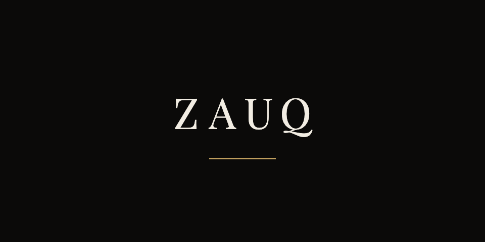

Solid archfavicon · badge
Solid archfavicon · badge Round solidsocial avatar only
Round solidsocial avatar only
Ceremonialsplash · 200px+ Wordmarkheader · emailSolid archfavicon · badgeRound solidsocial avatar only
Wordmarkheader · emailSolid archfavicon · badgeRound solidsocial avatar only
Ceremonialsplash · 200px+Wordmarkheader · emailBelow 32px the outlined mark becomes the solid fill — a hairline greys out when downsampled. The round avatar is the only circle in the system, and only because social platforms crop to one; in product an avatar is a 3px brass square.
The wordmark carries no rule and no tagline: the rule belongs to the ceremonial lockup, the tagline is a separate tracked-Archivo layout element.